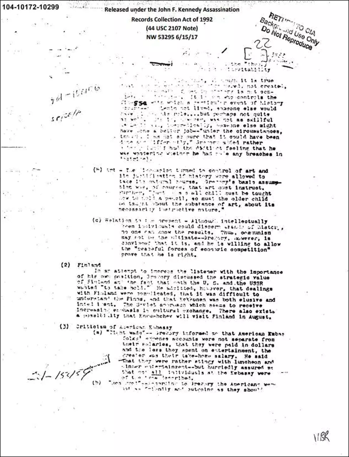

ULKOMAAT
Suomi mainitaan salatuissa Kennedy- dokumenteissa - kuulusteltu neuvostovirkailija kehui Kekkosen älykkyyttä
Julkaistu: 27.10. 8:11
Torstain ja perjantain välisenä yönä julkistetuissa tuhansissa presidentti John F. Kennedyn salamurhaan liittyvissä dokumenteissa puhutaan myös Suomesta
Kaikkiaan Suomea tai suomessa toimineita diplomaatteja sivutaan ainakin kymmenessä asiakirjassa. Pisin niistä on osa yhteenvetoa pöytäkirjasta, jossa kuulustellaan ”Gregoryksi” nimettyä neuvostoliittolaista diplomaattia tai tiedusteluvirkailijaa.
Useammassa Suomi-asiakirjassa taas esiintyy Grigori Golub, joka toimi Neuvostoliiton konsulina Suomessa, ja hän hyväksyi Kennedyn surmanneen Lee Harvey Oswaldin viisumin kun tämä loikkasi Suomen kautta Neuvostoliittoon vuonna 1959. Oswald sai Golubilta viisumin lisäksi ohjeistuksen Neuvostoliittoon matkustamisesta. Golubin tiedetään ottaneen itse yhteyttä Yhdysvaltain Helsingin-lähetystöön kun Oswald oli käynyt hänen luonaan.
Golub mainitaan useassa dokumentissa, joista ainakin yhdessä käsitellään suhdetta paikallisen naispuolisen kontaktin kanssa. Toisessa taas kerrotaan Golubin vaimon Nina Golubin matkustaneen Moskovaan 22. toukokuuta 1957. KGB:n everstinä Golub oli todennäköisesti amerikkalaisten vakoilutoiminnan kohde.
Asiakirjoista ei selviä varmuudella, ovatko Golub ja ”Gregory” sama henkilö.
Yksi Suomea käsittelevistä Kennedy-dokumenteista.
(KUVA: National Archive)
Kuulustelukertomuksen mukaan kuulusteltu oli yrittänyt vakuuttaa kuulijansa kertomalla Suomen strategisesta arvosta mainiten, että sekä Yhdysvallat että Neuvostoliitto halusivat ”saada otteen” maasta.
”Hän kuitenkin totesi, että Suomen kanssa toimiminen oli monimutkaista, että suomalaisia oli vaikea ymmärtää, ja että Kekkonen oli sekä välttelevä että älykäs”, dokumentissa kerrotaan tämän kuvailleen.
Heikosti luettavissa olevan tekstin mukaan keskustelussa käsiteltiin myös Suomen ja Neuvostoliiton välistä kulttuurivaihtoa, jonka merkityksen todettiin kasvavan, sekä neuvostojohtaja Nikita Hrustsovin mahdollista vierailua Suomeen.

Presidentit John F. Kennedy ja Urho Kekkonen Andrewsin lentotukikohdassa Yhdysvalloissa 16. lokakuuta 1961.
(KUVA: Knudsen, Robert L.)
Kuulustelun päivämäärä ei ole varmaksi luettavissa dokumentissa tai sen saatteessa. Hrushtshov vieraili Suomessa kesäkuussa 1957 sekä syyskuussa 1960 onnittelukäynnillä Kekkosen syntymäpäivänä.
Dokumentin toisella sivulla kuulustellun kerrotaan sanoneen, että Neuvostoliiton lähetystön virkailijat pyrkivät olemaan ystävällisiä ulkomaalaisia – ”suomalaisia, amerikkalaisia, ketä tahansa” – kohtaan. Virkailijoita oli myös kannustettu varaaman riittävästi aikaansa ”nautinnoille” – illalliselle tai elokuvalle – ”mielellään suomalaisen tai muun ulkomaalaisen kanssa”.
Johannes Kotkavirta, Jouko Juonala